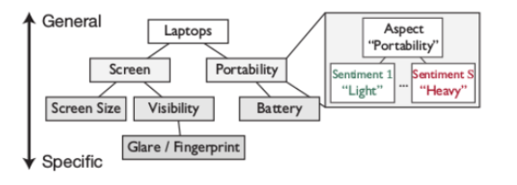
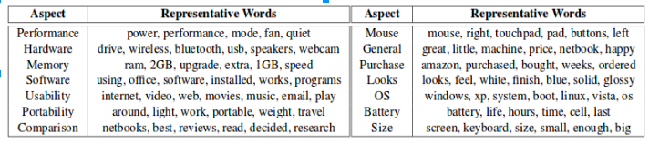
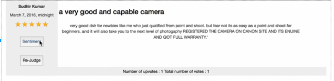
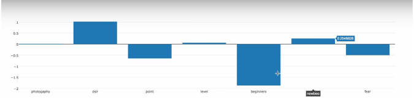

Problem Statement
Understand the sentiment of user reviews and provide useful information for the end-user as well as the product manufacturer regarding public opinion of the product.
Abstract
Sentiment Analysis is a widely addressed Natural Language Processing task wherein the semantic orientation of a text unit is adjudged. However, a major challenge in Sentiment Analysis is the identification of entities towards which the opinion is expressed. Sentitool ( Aspect Based Sentiment Analysis system ) receives as input a set of texts ( product reviews) discussing a particular entity (e.g., a new model of a mobile phone). The systems attempt to detect the main (e.g., the most frequently discussed) aspects (features) of the entity (e.g., battery, screen) and to estimate the average sentiment of the texts per aspect (e.g., how positive or negative the opinions are on average for each aspect). It involves the extraction of the aspect term from a sentence and secondly the polarity of the opinion corresponding to that aspect is adjudged. We adopted an approach based on Probabilistic Graphical Models(PGMs). A linear-chain CRF is trained with features based on word vectors and text processing techniques(POS, dependency parse) to sequentially label the aspect term in a sentence. SVM classifier then identities the polarity corresponding to the aspect, with features based on cosine similarity with words from sentiwordnet.
What is Aspect Based Sentiment Analysis ?
Sentiment analysis (also known as opinion mining) refers to the use of natural language processing, text analysis and computational linguistics to identify and extract subjective information in source materials. ABSA refers to determining the opinions or sentiments expressed on different features or aspects of entities, e.g., of a cell phone, a digital camera, or a bank. A feature or aspect is an attribute or component of an entity, e.g., the screen of a cell phone, the service for a restaurant, or the picture quality of a camera.
Applications
Parameter-based sentiment analysis of user reviews would allow us to give a detailed feedback to the manufacturer. Such a feedback would help them understand if the general public is unhappy with a certain aspect of their product and hence can help them modify it accordingly. For example, users may be unhappy with the screen resolution in the new iPhone 6s mobile). It can also be used to develop new products with emphasis on those particular parameters. Such an analysis also helps us provide a targeted recommendation system for the users. For example, we can provide suggestions for products with good sentiment on screen resolution to users who might have complained about the same in their previous reviews.
Approach
The project can be divided into three major tasks namely data extraction and processing, aspect and its category detection and assigning sentiment polarity.
- Data Extraction involves collecting data (user reviews and other meta-data) from popular ecommerce websites.
- Processing step converts unstructured data (raw html) into a structured format (relational tables) which can be used by our tool to determine the various aspects and their corresponding sentiments for each product.
- Aspect Category (Entity and Attribute). Identify every entity E and attribute A pair E#A towards which an opinion is expressed in the given text. E and A should be chosen from predefined inventories of Entity types (e.g. laptop, keyboard, operating system, restaurant, food, drinks) and Attribute labels (e.g. performance, design, price, quality) per domain. Each E#A pair defines an aspect category of the given text. 
- Sentiment Polarity. Each identified E#A pair of the given text has to be assigned a polarity, from a set P = {positive, negative, neutral}.
Challenges
- Storing and retrieving huge corpus efficiently.
- Also, reviews are sometimes noisy and filled with grammatical mistakes. Theses problem are tough to handle. Dataset was cleaned and duplicates were removed in order to handle this.
- Problems with identifying the aspect, which is being talked about in a given review and its corresponding sentiment. Example – “The new iPhone has a bad camera but a long lasting battery.” , Here the sentiment for camera is negative while that of the battery is positive.
- If the review is comparative in nature i.e talks about multiple products in a single review. Example – “I recently bought an iPhone. But my Samsung Grand has a better processor.” , here iPhone was the original product but the review does not talk about it directly.
- Problems with anaphora resolution. Example – “The new iPhone has a lithium battery. It is really bad”, here its difficult for the system to answer the question what does the “it” refer to ?
Conclusion
 A review and its aspect based sentiment analysis
We ran our model on Flipkart Review dataset crawled by us. The tool works perfectly on any type of reviews single or compound reviews. It generates summaries listing all the aspects and their overall polarity. The outcome is be average sentiment for each aspect of an entity.
Tags
#IIITH #IIIT-H #Major_Project #IRE #Information_Retrieval_and_Extraction #ABSA #Aspect_based_sentiment_analysis #product_review #flipkart